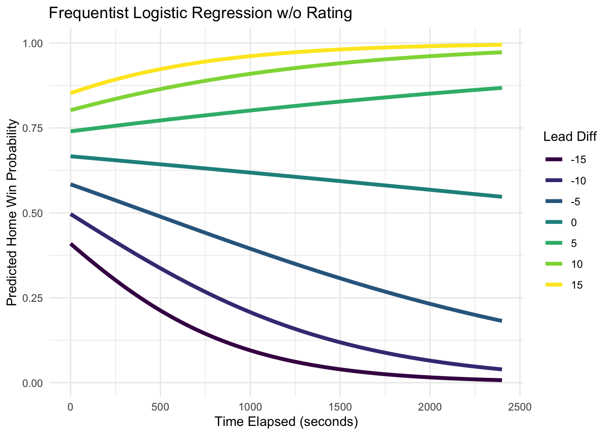
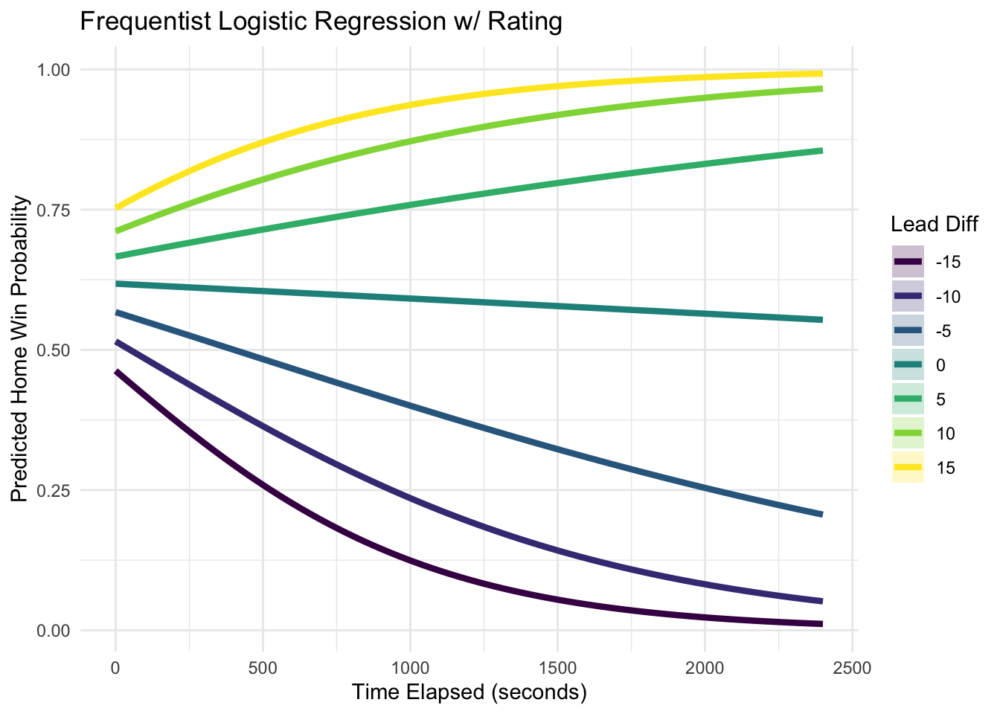
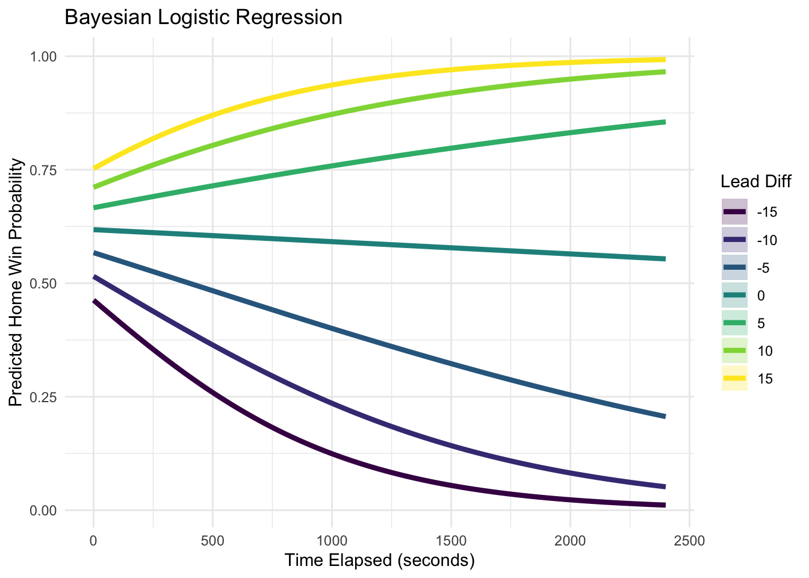
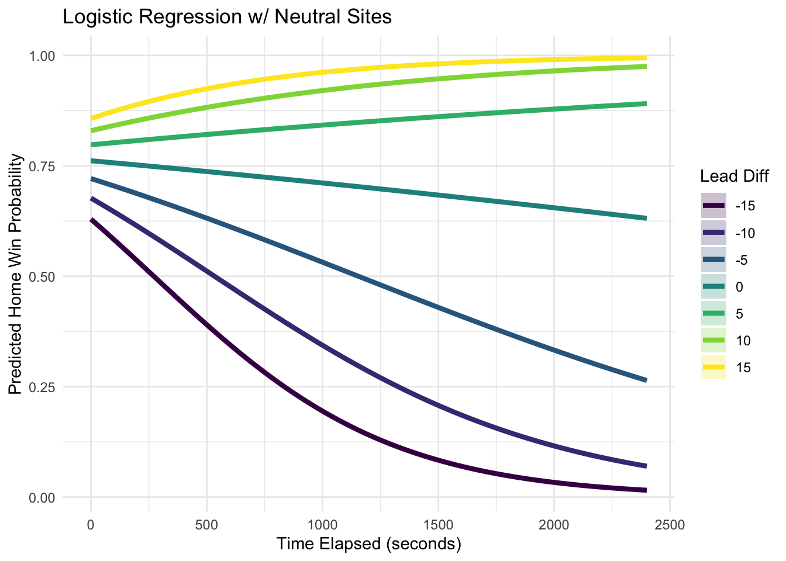
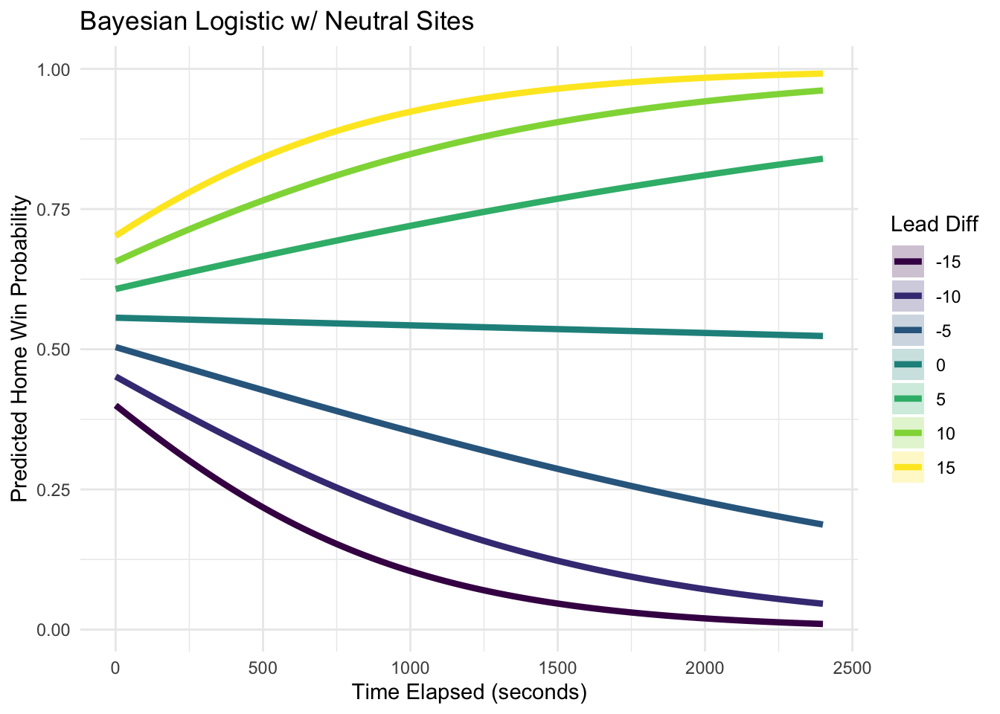

Introduction
Post 2
After completing the data collection and cleaning stages of the project, the next step was developing models to estimate in-game win probability. The first models I explored were logistic regression models, inspired by the research paper A Bayesian Logistic Regression Framework for In-Game Win Probability Estimation in NCAA Basketball.
I began with a frequentist logistic regression model before extending the approach to a Bayesian framework. Both approaches use the same predictor variables and model structure, but they estimate the model parameters differently. Frequentist models estimate a single value for each coefficient using the observed data, while Bayesian models combine the observed data with prior assumptions and estimate a distribution of plausible values. Comparing these approaches provided an opportunity to see how different statistical frameworks affect win probability predictions.
Frequentist Logistic Regression Models
The objective of the logistic regression models was to predict the probability that the home team would eventually win the game. Because the response variable, home_win, can only take the values 0 or 1, logistic regression is a natural modeling choice.
Rather than directly calculating win probabilities from historical outcomes, logistic regression learns relationships between variables describing the current game state and the likelihood of winning. In this project, the primary predictors were lead_diff, time_elapsed, and rating_diff.
All logistic regression models were trained using the cleaned 2025 season dataset.
Without Team Rating
The response variable, home_win, is a binary indicator equal to 1 if the home team won the game and 0 otherwise. The first model used only time_elapsed, lead_diff, and their interaction term.
\[ \begin{aligned} \log\left(\frac{P(home\_win = 1)}{1 - P(home\_win = 1)}\right) = \beta_0 &+ \beta_1(time\_elapsed) + \beta_2(lead\_diff) \\ &+ \beta_3(time\_elapsed*lead\_diff) \end{aligned} \]
This model assumes that win probability depends entirely on the current game situation. The score differential captures who is leading, while the interaction term allows the importance of a lead to change as the game progresses. For example, a 10-point lead early in the game is much less valuable than a 10-point lead in the final minutes.
To visualize the model, predicted probabilities were generated using the ggpredict() function from the ggeffects package and plotted across a range of score differentials.
The resulting curves show how the model’s estimate of home-team win probability changes throughout a game. Larger leads correspond to higher win probabilities, and the effect of score differential becomes increasingly important as time expires. Even when the score differential is zero, the model predicts the home team has a greater than 50% chance of winning because the data shows that home teams win more often than away teams.
With Team Rating
The second frequentist model incorporated team strength through the rating_diff variable. The team rating data was sourced from TeamRankings.
\[ \begin{aligned} \log\left(\frac{P(home\_win = 1)}{1 - P(home\_win = 1)}\right) = \beta_0 &+ \beta_1(time\_elapsed) + \beta_2(lead\_diff) \\ &+ \beta_3(time\_elapsed*lead\_diff) \\ &+ \beta_4(time\_elapsed*lead\_diff) \\ &+ \beta_5(time\_elapsed*rating\_diff) \end{aligned} \]
A positive rating_diff indicates that the home team is stronger, while a negative value indicates the away team is stronger.

For this plot and the following plots, rating_diff was held constant at 0, meaning the two teams are assumed to be evenly matched.
Even though the rating difference is fixed at zero, adding team ratings still changes the model. When an additional predictor is included, all model coefficients are re-estimated. As a result, some variation that was previously attributed to score differential or time elapsed is now explained by team strength.
Compared to the previous model, the predicted probabilities become less extreme at the start of games. The win probability for a tied game begins closer to 60% rather than 65%, while the probabilities associated with large leads also move slightly closer to 50%. As the game progresses, score differential becomes the dominant factor and the predictions from the two models become increasingly similar.
Bayesian Logistic Regression Model
The Bayesian logistic regression model used the same predictor variables as the frequentist model with ratings but estimated the coefficients within a Bayesian framework.
Rather than producing a single estimate for each coefficient, Bayesian methods estimate a distribution of plausible values. To do this, prior distributions are specified before observing the data and then updated using the observed outcomes. For this project, relatively weak normal priors were used so that the model would learn primarily from the data.
The Bayesian model was fit using the brms package:
\[ \begin{aligned} \log\left(\frac{P(\text{home\_win} = 1)}{1 - P(\text{home\_win} = 1)}\right) = \beta_0 &+ \beta_1(\text{time\_scaled}) + \beta_2(\text{lead\_scaled}) \\ &+ \beta_3(\text{rating\_scaled}) \\ &+ \beta_4(\text{time\_scaled} \cdot \text{lead\_scaled}) \\ &+ \beta_5(\text{time\_scaled} \cdot \text{rating\_scaled}) \end{aligned} \]
Because of the size of the dataset, all predictor variables were scaled before training. Even with these adjustments, the model required substantially more computation than the frequentist models and was ultimately trained on a high-performance computing (HPC) cluster.
Once the model finished training, predicted probabilities and intervals were generated.

The Bayesian logistic regression model produced results that were very similar to the frequentist logistic regression model with ratings. This is not surprising because the model was trained on a large amount of play-by-play data. When substantial data is available, the observed data tends to dominate the prior assumptions, causing Bayesian and frequentist estimates to converge.
One advantage of the Bayesian framework is that it naturally provides credible intervals around the predictions. These intervals describe a range of plausible win probabilities given both the observed data and the model assumptions. In practical terms, they communicate not only the model’s prediction, but also how certain the model is about that prediction. This additional measure of uncertainty can be useful when modeling sporting events, where outcomes are unpredictable.
Adjusting for Neutral Site Games
The final modification explored in the logistic regression models was accounting for neutral-site games.
Because home teams win more often than away teams in college basketball, logistic regression models trained on historical data naturally learn a home-court advantage. However, many important games such as all NCAA Tournament games are played at neutral sites where neither team receives that advantage.
In the 2025 season dataset, approximately 11.8% of games were played at neutral locations. To account for this, I incorporated home-court advantage estimates from TeamRankings, which suggest that playing at home is worth approximately 3.3 rating points.
For true home games, 3.3 points were added to the home team’s rating differential. For neutral-site games, no adjustment was applied.

Accounting for neutral-site games produced a noticeable change in the regression curves for the frequentist model. In the previous model, the home team was still given an advantage at the start of the game, even when the score differential and rating differential were both equal to zero. After incorporating the neutral-site adjustment, the lead differential of 0 curve begins much closer to a 50% win probability.
The adjustment also shifted the remaining regression curves downward. This occurs because the model now accounts for the fact that not all games are played on a true home court. Since rating_diff is defined as the home team’s rating minus the away team’s rating, adding 3.3 points to the home team’s rating for true home games directly increases rating_diff. No adjustment was applied to neutral-site games, resulting in lower pregame win probabilities and predictions that better reflect NCAA Tournament games, where neither team receives a home-court advantage.
Although the starting probabilities changed noticeably, the overall shape of the curves remained similar. As the game progresses, score differential and time elapsed become increasingly important, causing the influence of the pregame adjustment to diminish.
The same adjustment was then incorporated into the Bayesian logistic regression model.

The neutral-site adjustment produced a similar effect in the Bayesian model. The regression curves shifted downward, reducing the home team’s predicted win probability at the start of the game when the score differential is zero. However, the shift was not as large as in the frequentist model, with the lead differential of 0 curve still beginning slightly above 50%.
This result suggests that the Bayesian model retained a small amount of the home-team advantage that had been learned from the historical data. Even after adjusting for neutral-site games, the model still estimates that the designated home team is slightly more likely to win before the game begins.
Similarly to the frequentist model, the effect of the neutral-site adjustment becomes less important as the game progresses. Once the score begins to change and time starts to expire, the current game state provides much more information than pregame expectations. Consequently, the overall shape of the regression curves remains nearly identical to the previous Bayesian model, while the starting probabilities better reflect a neutral-site setting.
Conclusion
The logistic regression models provided an important first step in modeling in-game win probability. By relating game state variables such as score differential, time elapsed, and team strength to the probability of winning, these models demonstrated how statistical relationships can be used to estimate win probability throughout a game.
Developing both frequentist and Bayesian versions of the model also provided an opportunity to compare two different statistical approaches. While the models produced similar predictions, the Bayesian approach introduced uncertainty estimates and demonstrated how prior information can be incorporated into a predictive model.
In the next post, I explore a fundamentally different approach to win probability estimation through the MLE and Dynamic Bayes methods. Rather than fitting a regression model, these methods estimate probabilities directly from historical game outcomes and provide an alternative way to model in-game win probability.